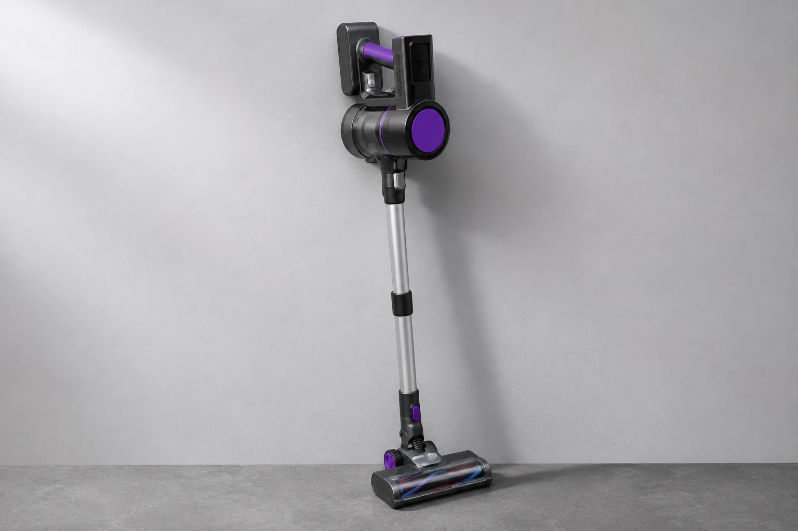
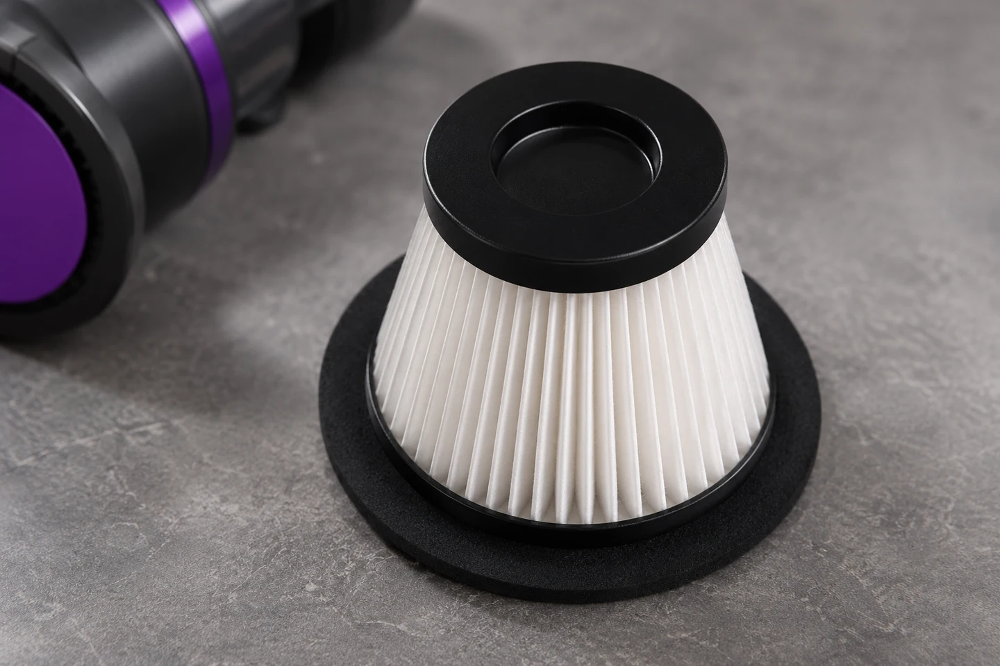
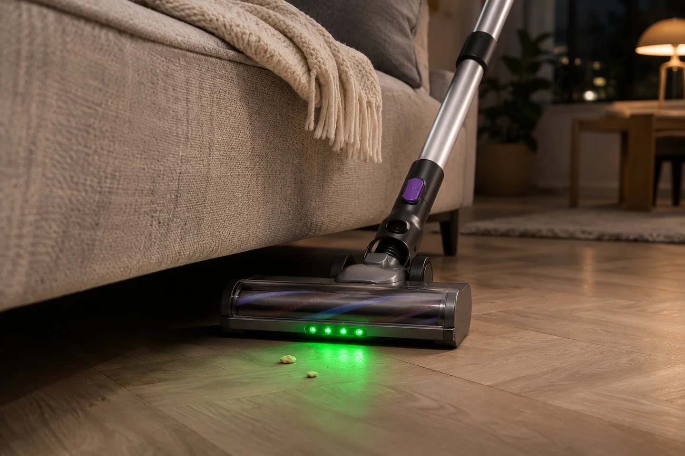
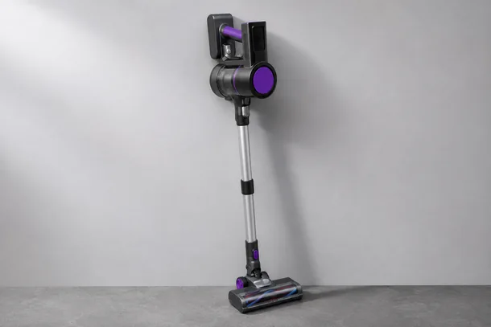

Беспроводной пылесос
Весь дом одним пылесосом
Длинная трубка — для пола. Сняли её — и тот же пылесос чистит диван, полки и сиденья в машине.
350 Вт
Один мотор и для пола, и для дивана, и для полок.
- 3 режима
- Силу всасывания выбирают под поверхность.
- HEPA
- Два фильтра подряд задерживают мелкую пыль.
Как перейти на ручную уборку

Пыль остаётся внутри
Сначала воздух проходит предварительный фильтр, потом складчатый HEPA. Мелкая пыль не возвращается в комнату с выдувом.

Видно, где пыль
Свет на щётке выхватывает пыль у плинтуса и под диваном — там, куда обычно не заглядывают. Аккумулятор съёмный: заряжайте его отдельно от пылесоса.
Для квартиры, где убирают и пол, и мебель — без второго прибора.
Для дома или для машины?
Беспроводной — для пола и мебели
Длинная трубка для пола, съёмный блок для сидений и полок.
Автомобильный — для салона
Узкая насадка для швов, направленный выдув для углублений.
Характеристики
Все параметры 7
- Модель
- A7
- Мощность
- 350 Вт
- Режимы работы
- 3
- Формат
- Вертикальный и ручной
- Питание
- Съёмный аккумулятор
- Фильтрация
- Предварительный фильтр и HEPA
- Щётка
- Светодиодная подсветка
Выбрать беспроводной или автомобильный пылесос?
Для комнат и коридора у беспроводного пылесоса есть длинная трубка и напольная щётка с подсветкой. Для щелей в салоне машины у автомобильного есть узкая насадка и выдув.
Как пылесос задерживает мелкую пыль?
Сначала воздух проходит через предварительный фильтр, затем через HEPA-фильтр. При подборе сменного фильтра сверяйте его совместимость именно с этим пылесосом.
Можно ли заменить аккумулятор отдельно?
Аккумулятор у пылесоса съёмный. Если планируете держать второй заряженный блок, заранее уточните наличие аккумулятора для этой модели.

Уборка
Беспроводной пылесос
[59 990 ₸]
- [В наличии]
- Доставка [1–7 дней]
- Гарантия [12 месяцев]
Задать вопрос продавцу
Скопируйте текст и отправьте его продавцу. Название товара уже указано.